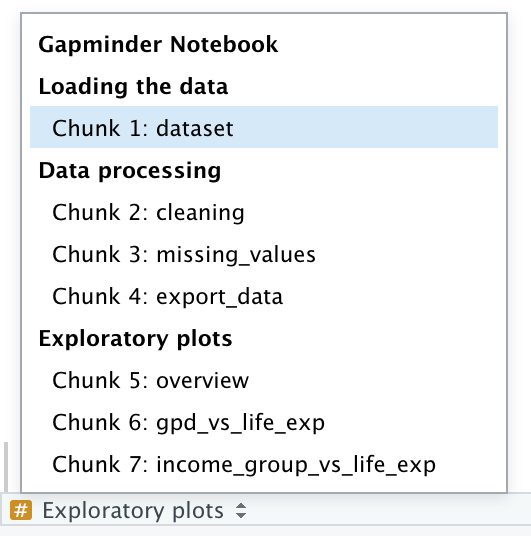
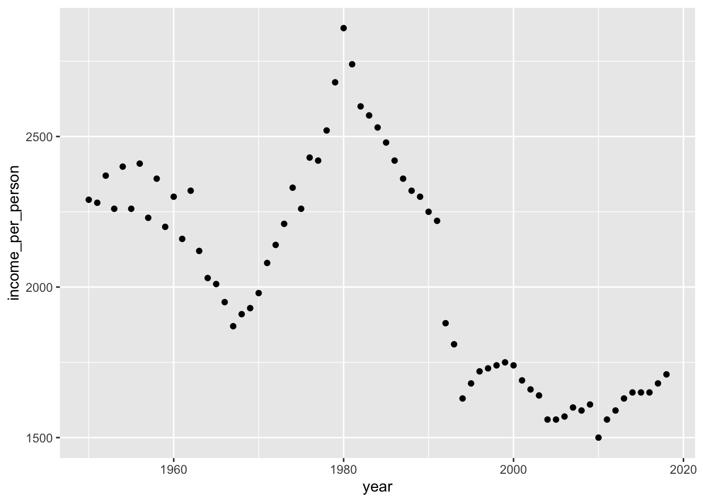
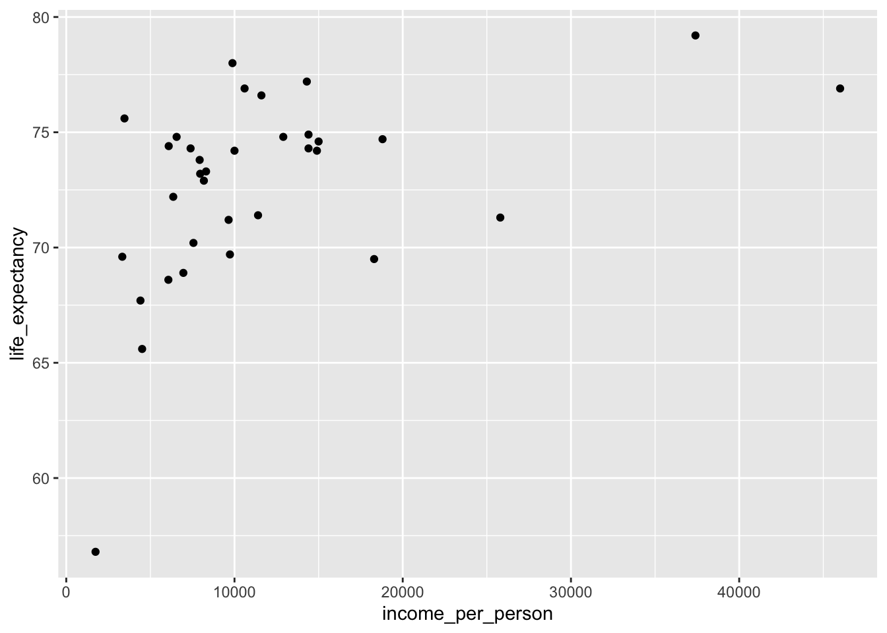
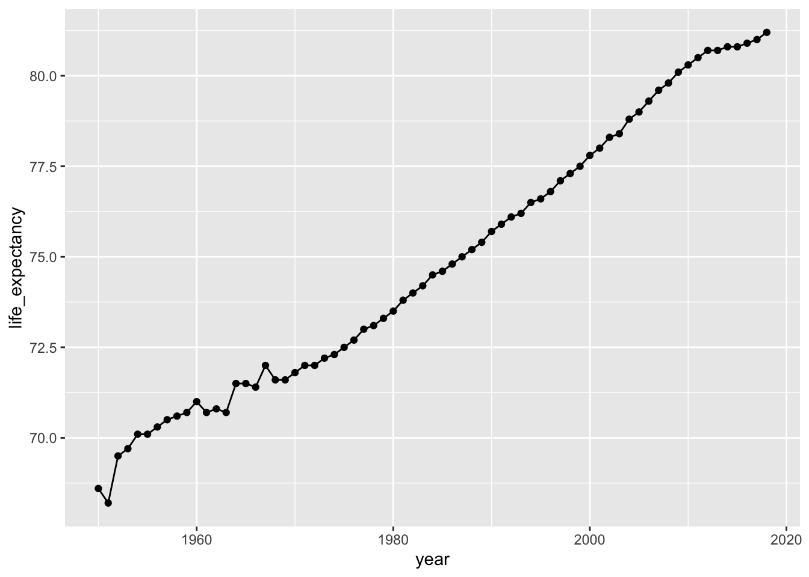
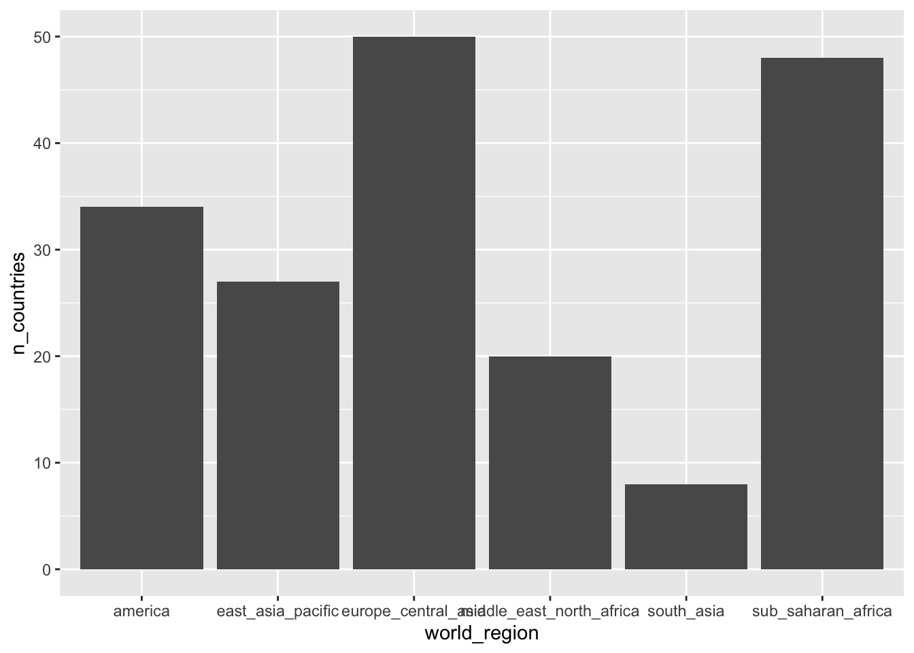
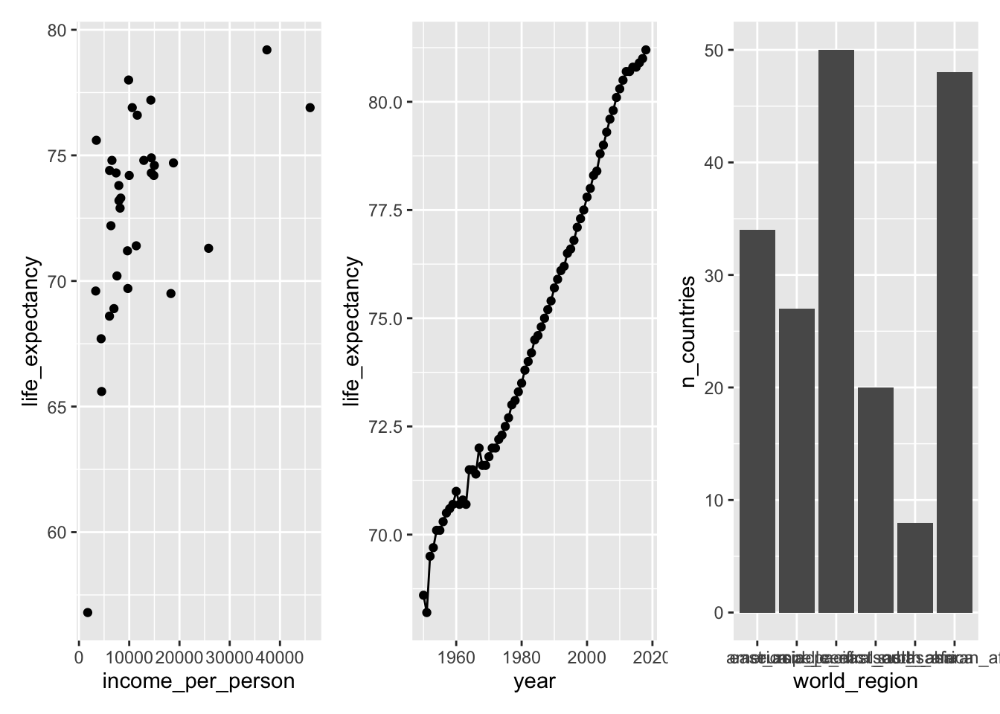
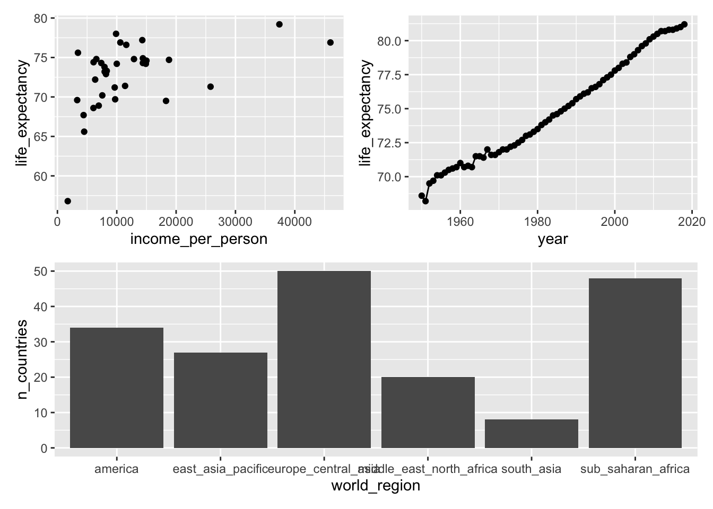
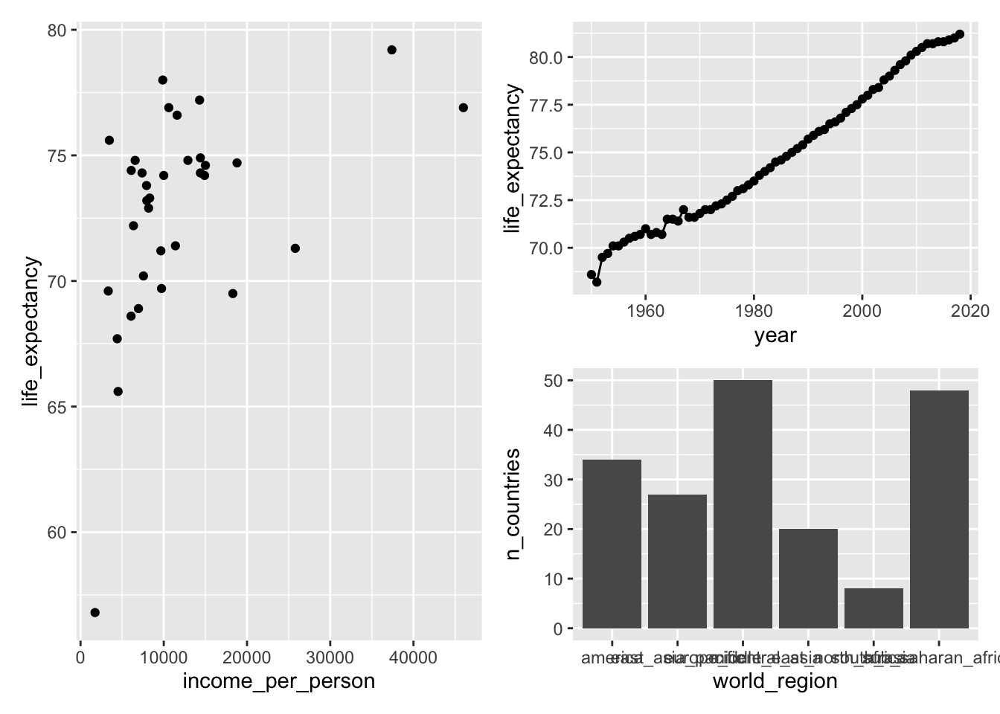
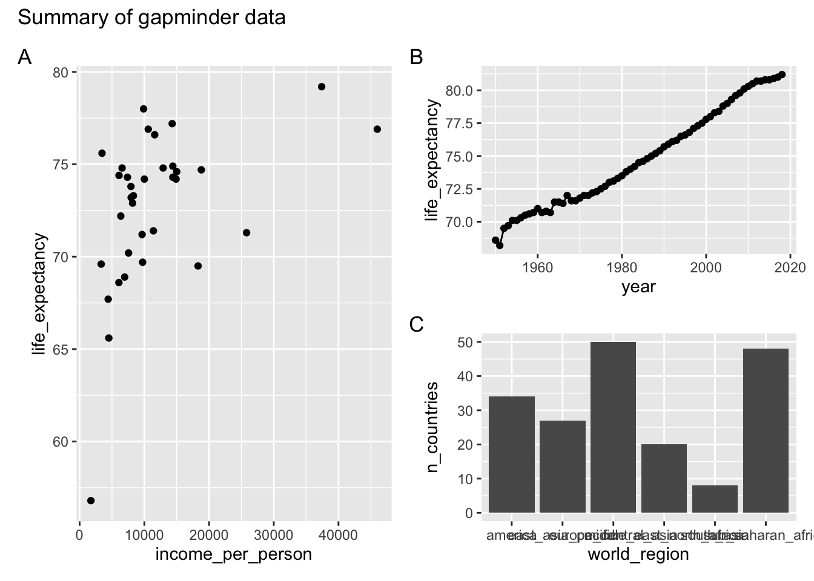

R Markdown
Martin van Rongen & Alexia Cardona1
R Markdown
R Markdown is integrated in RStudio and enables you to create documents, reports, presentations and dashboards. This in turn helps you to communicate your research better than using scripts alone. It does this because it supports extensive text formatting and easy code integration. That in turns enables you to walk a reader through an analysis much more easily than you would be able to do using comments in a script.
An R Markdown file is made up of 3 basic components:
- header
- markdown
- R code chunks
Here we will assume that the output of our report is an .html file. HTML files are files for web pages. This means that the report that we will generate can be easily deployed on the web.
R Markdown can also be used to generate PDFs, Microsoft Word or Latex documents, among other things.
R Markdown header
The markdown document starts with an optional header in YAML (YAML Ain’t Markup Language) format known as the YAML metadata. In the example below the title, author and date are specified in the header. Other options can be specified in the header such as table of content which we will look at later on in the course.
---
title: "Reproducible Research using R"
author: "Martin van Rongen"
date: 26 May 2020
---To create a new R Markdown file go to File -> New File -> R Markdown. To generate the output file (in this case an html document), press the knit button:
Alternatively, use the corresponding keyboard shortcut (Mac Cmd + Shift + K, Windows Ctrl + Shift + K).
Markdown
The text following the header in an Rmarkdown file is in Markdown syntax. This is the syntax that gets converted to HTML format once we click on the Knit button or the Build website button (yes, you can deploy whole websites using R Markdown). The philosophy behind Markdown is that it should be easy to write and easy to read.
The full documentation of the Markdown syntax can be found at https://pandoc.org/MANUAL.html. However this might be a bit of information overload when you’re starting. Therefore below is a simplified version of the Markdown syntax.
Headings
Below is the Markdown code you need to use to specify headings at different levels and the rendered output respectively below the code:
# Heading 1
Heading 1
## Heading 2
Heading 2
### Heading 3
Heading 3
#### Heading 4
Heading 4
Inline text formatting
To make text bold use **double asterisks** or __double underscores__.
To make text italic use *asterisks* or _underscores_.
To make text superscript use ^caret^.
To make text subscript use ~tilde~.
To mark text as inline code use `backticks`.
To strikethrough text use ~~double tilde~~.
Line breaks
To create a line break, put more than 2 spaces at the end of a sentence or place \ in a new line followed by a new line  .
.
Links
Linking text to Headers
To link text to a header you would need to specify an identification tag next to a header as follows:
# Markdown {#markdown-header}
Then to link text to this header use [link to header](#markdown-header). This will be rendered as link to header.
Linking text to a webpage
To create a link to a webpage use [text of link](https://www.gapminder.org). This is rendered as text of link.
Footnotes
To indicate a footnote use[^2] and, for example, indicate another one as[^3] (I already used [^1]!) and then specify the wordings of the footnotes as:
[^2]: This is a footnote.
[^3]: Another footnote.
You do not need to put footnotes at the end of the document for them to be rendered there. This example is rendered as follows:
To indicate a footnote use2 and, for example, indicate another one as3 and then specify the wordings of the footnotes as:
Challenge
Try the following:
- Create an
R Projectif you haven’t done so already- Start a new
R Markdownfile and save it in the appropriate subfolder (e.g.notebooks)- Think about one of your own projects and use that to come up with a title.
- Create three levels of headings, sub-dividing your project and try out some of the inline text formatting.
- Add a link to the https://www.gapminder.org website (or any other website).
- Use
knitto render an html document and see if it looks like you expected.
Lists
Ordered lists
To create an ordered list use the following syntax:
1. Item 1
2. Item 2
3. Item 3This is rendered as:
- Item 1
- Item 2
- Item 3
Use 4 spaces to indent an item if you would like to have sub-lists:
1. Item 1
2. Item 2
3. Item 3
a. Item 3a
i. Item 3ai
ii. Item 3aii
b. Item 3b
c. Item 3c
4. Item 4- Item 1
- Item 2
- Item 3
- Item 3a
- Item 3ai
- Item 3aii
- Item 3b
- Item 3c
- Item 3a
- Item 4
Unordered lists
In an unordered bulletted list, each item begins with *, + or -. Example:
* Item 1
* Item 2
* Item 3
* Item 3a
* Item 3ai
* Item 3aii
* Item 3b
* Item 3c
* Item 4Will be rendered as:
- Item 1
- Item 2
- Item 3
- Item 3a
- Item 3ai
- Item 3aii
- Item 3b
- Item 3c
- Item 3a
- Item 4
Tasks list
Tasks list can be done using the following syntax:
- [ ] an unchecked task list item
- [x] checked itemThis will be rendered as:
- [ ] an unchecked task list item
- [x] checked item
Inserting images
To insert an image use the following syntax: . Example:

Will be rendered as:

R Logo
You can adjust the size of the image by adding a width and height in pixels in between curly brackets, like this:
{width=100px height=100px}
will plot like
R Logo
Blocks
Blocks or quotes in the notebook can be created by using the > sign as follows:
> "Life can be great, when you try something new."
>
> _Kevin the koala_This is rendered as:
“Life can be great, when you try something new.”
Kevin the koala
If you would like to add code blocks, use ``` before and after the code as follows:
```
print("Hello world")
x <- 1 + 2
print(x)
```This will be rendered as:
print("Hello world")
x <- 1 + 2
print(x)
Adding a table of contents
To add a table of contents to your report add the following to the YAML header you need to specify the output (in this case a html_document) and set toc to true. If you want to make sure your table of contents stays visible even whilst scrolling, then you need to float it, using toc_float: true.
output:
html_document:
toc: true
toc_float: trueBy default all headings up to level 3 headings are displayed in the table of contents. You can adjust this by specifying toc_depth as following:
output:
html_document:
toc: true
toc_depth: 4
Adding references
Adding references and citations in Markdown is not as easy as reference manager software such as Mendeley. To be able to create citations you will need to create a bibliography file with all the references in it. Here is an example of a bibliography file. The bibligraphy file has to be placed in the same folder as the one where the .Rmd file is. Next, add the following to the YAML header:
bibliography: references.bib
link-citations: yesYour YAML header should now look like:
---
title: "Reproducible research using R"
author: Martin van Rongen
date: 26 May 2020
bibliography: references.bib
link-citations: yes
---To cite a reference use the @ together with the ID of the reference. Example:
Citation to my paper @cardona2014 and @cardona2019
Will be rendered as:
Citation to my paper Cardona (2014) and Cardona et al. (2019)
To add the bibliography at the end of the report add a References heading at the end of the report:
# References
See references at the end of the report.
See https://rmarkdown.rstudio.com/authoring_bibliographies_and_citations.html for more information.
R code chunks
So far we have not used any R code and all the code we used so far is in Markdown. As the name suggests, Rmarkdown files contain markdown and R. Rmarkdown files have a .Rmd extention. Using R in a markdown document makes sense if we integrate our analysis in our report. Some operations that we might need to do are; loading our dataset, performing some operations on the dataset and displaying results, either in a table or in a plot. We will be doing all this in the following sections.
If you would like to insert R code inside the notebook you will have to insert it inside an R code chunk to be able to execute it. To do this click on the Insert button at the top of the Source panel in RStudio:
Or use the associated shortcut (Mac Cmd + Option + I, Windows Ctrl + Alt + I).
This creates an R code chunk as follows:
Alternatively, you can type the r code chunk (although I recommended using the keyboard shortcut). The R code should be placed in between the triple backticks. Note that on the right hand side of the R code chunk there is a green “play” button that will run the R code chunk if pressed. By default, when the Rmarkdown document is knitted, the R code will be executed and the R code chunk is displayed before the executed code.
To run a chunk you can use the Run button or the shortcut (Mac Cmd + Shift + Enter, Windows Ctrl + Shift + Enter).
Chunk names
It is possible to give names to chunks using ```{r chunk_name}. This has several advantages:
- You can navigate more easily through your R Notebook using the drop-down code navigator:

Graphics produced by the chunks will have meaningful names based on the chunk name, which is a big improvement over
Untitled1.png.One chunk name has special meaning:
setup. In R Notebooks the chunk namedsetupwill automatically run only once, before any other chunks are run.
Chunk options
You can control the output of chunks with different options in the chunk header (e.g. {r, include = FALSE}).
These chunk options include:
eval = FALSEprevents code from being evaluated. No code is run and no output displayed. Useful to display example code or avoiding commenting out many lines.include = FALSEdo not display the code and results in the page after it is knitted. The R code however still runs and therefore the variables or results in this code chunk can be used by the other chunks.echo = FALSEdoes not display the code, but it displays the results in the rendered file.message = FALSEorwarning = FALSEprevents messages or warnings from being displayed in the rendered file.
There are almost 60 options by Knitr that you can use to customise your code blocks. A full list of options can be found here.
Gapminder data set
So far we have not really played around with data. To help us understand better what we can do using R Markdown, we are going to import some data.
To do the analysis, we will first create an R Notebook by going to File -> New File -> R Notebook. Note that this is different to R Markdown (which is further down the list). A detailed explanation of the differences between R Notebooks and R Markdown files can be found here, but practically for us it means you have a Preview button:
This makes it faster to see changes than constantly using the Knit function.
Save your R Notebook as gapminder_notebook.Rmd to your existing R project (preferably in a logical place, such as a scripts or notebooks folder).
The dataset
This dataset uses data from the Gapminder Foundation. We’re downloading the gapminder_1950_2018.csv dataset into our project. The data set contains a small fraction of the available data and has been cleaned up make it easy to work with for the purposes of this course.
- Create a
datafolder in your working directory. - Download the dataset into the
datafolder by copying and running in theConsole(no need to run it in your R Notebook, otherwise the data are downloaded every time):
download.file(url="https://raw.githubusercontent.com/mvanrongen/2020_Gates_Reproducibility/master/data/processed/gapminder_1950_2018.csv", destfile="data/gapminder_1950_2018.csv")Next, perform the following steps:
- Create an R chunk and load the
tidyverse,kableExtraandrmarkdownpackages. We’ll be using thekableExtrapackage for some fancy table displays, so if you haven’t got it installed then install it usinginstall.packages("kableExtra").
- Read in the data using
or if your gapminder_notebook.Rmd is in a subfolder, then navigate to it using
The gapminder_1950_2018.csv dataset that is loaded into the notebook contains several life statistics, amongst which life expectancy and income per person for each country per year from 1950 to 2018. The dataset has the following columns:
| Column | Description |
|---|---|
| country_id | Country ID |
| country | Country |
| world_region | Region of the world the country is located in |
| year | Year the life expectancy and GDP per capita index applies to |
| income_groups | Category of income |
| income_per_person | Average income per person (GDP / population size) |
| life_expectancy | Life expectancy (years) |
The dataset contains data for various countries across the world. Later we will be doing some data wrangling, so that we can focus on a subset of these.
Now we’re all set we can start looking at how to display some data using tables.
Tables
Tables can be created manually or dynamically.
Manually creating tables
Although probably only useful for small tables, you can manually create tables, using |and - as follows:
| country_id | country |
| ----------- | ----------- |
| afg | Afghanistan |
| ago | Angola |This is rendered as:
| country_id | country |
|---|---|
| afg | Afghanistan |
| ago | Angola |
Table alignments can be done using the following syntax:
| country_id (left) | country (centre) | world_region (right) |
| :--- | :----: | ---: |
| afg | Afghanistan | south_asia |
| ago | Angola | sub_saharan_africa |This is rendered as:
| country_id (left) | country (centre) | world_region (right) |
|---|---|---|
| afg | Afghanistan | south_asia |
| ago | Angola | sub_saharan_africa |
Dynamic tables using rmarkdown
Clearly creating a large table this way is not very efficient or often even feasible when dealing with larger data sets. Furthermore, it goes against the principle of trying to make your research reproducible because the data are not generated through code.
R Markdown has some basic functionality to create tables in HTML. The paged_table() function creates a table that supports paging rows and columns. When we use this on our data set it looks like this:
Note that I’m using pipes here, but paged_table(gapminder) would also work.
Dynamic tables using kableExtra
Apart from the basic functionalities available in rmarkdown, we can also use the kableExtra package, which uses the knitr::kable() function to generate tables. It allows you to build complex tables and adjust the table styles easily.
More information can be found here.
Let’s explore that a bit more by generating a table that displays the life expectancy per country in the Americas in 2018, in descending order.
The table is styled in twitter-fashion using kable_styling(), with striped rows that highlight when you hover over them.
The table is embedded in a scroll box of a fixed dimension using scroll_box.
gapminder %>%
filter(world_region == "america",
year == 2018) %>%
select(country, life_expectancy) %>%
arrange(desc(life_expectancy)) %>%
kable(caption = "Life expectancy in the Americas in 2018 (descending order)") %>%
kable_styling(bootstrap_options = c("striped", "hover"),
full_width = FALSE) %>%
scroll_box(width = "100%", height = "400px")| country | life_expectancy |
|---|---|
| Canada | 82.2 |
| Costa Rica | 81.4 |
| Chile | 80.7 |
| Peru | 80.2 |
| Panama | 79.4 |
| Cuba | 79.3 |
| United States | 79.1 |
| Nicaragua | 78.7 |
| Colombia | 78.6 |
| Ecuador | 78.3 |
| Antigua and Barbuda | 77.6 |
| Uruguay | 77.6 |
| Argentina | 77.0 |
| Barbados | 76.8 |
| Mexico | 76.8 |
| St. Lucia | 76.6 |
| Dominican Republic | 76.1 |
| Venezuela | 75.9 |
| El Salvador | 75.8 |
| Brazil | 75.7 |
| Jamaica | 75.2 |
| Paraguay | 74.8 |
| Bahamas | 74.1 |
| Bolivia | 74.0 |
| Trinidad and Tobago | 73.4 |
| Guatemala | 73.2 |
| Honduras | 73.1 |
| Belize | 72.5 |
| St. Vincent and the Grenadines | 72.0 |
| Grenada | 71.9 |
| Suriname | 71.6 |
| Guyana | 68.2 |
| Haiti | 64.5 |
Somewhat frustratingly, pagination is not possible with kable. So if you have a long table, you are best off using the paged_table() function from the rmarkdown package.
Challenge 1
We are interested in the relationship between income and longevity. To investigate this, we can use the
income_per_personandlife_expectancyvariables.Use your
gapminder_notebook.RmdR Notebook file to explore this further. First, we are going to do some plotting to get an idea of what the data look like. When doing this, remember to do the following:
- use clear headings (e.g.
# Exploratory analysis,## Investigating income vs life expectancyetc. to break up your code/explanations).- name your
``` {r}chunks to help you navigate through your code.Try the following (preferably use pipes (
%>%symbol) to get one data flow):
- Filter the dataset for data from 2018 only (hint: use
filter)- Plot using
ggplot()a scatterplot ofincome_per_personvslife_expectancy- Colour the points by
income_group- Facet the data by
world_region(hint: usefacet_wrap, see documentation)- Look at the data and add some comments/observations.
- Knit the document and see if the report looks like how you expected it to be.
Challenge 2
From the 2018 data it is clear that there are some strong differences in income per country, even per world region.
It would be interesting to know which countries showed the highest income and in which year. Again, when doing this exercise, think about how you’re going to communicate to others what you are doing.
Try the following:
- Find the highest income per
world_region(hint: you’ll have to group and arrange the data).- Display only the highest income country (hint:
slice())- Create a table using
kable()in twitter-style with stripes and hover to display the data.Answer
gapminder %>% group_by(world_region) %>% arrange(desc(income_per_person)) %>% slice(1) %>% kable(caption = "Highest income per person, per world region") %>% kable_styling(bootstrap_options = c("striped", "hover"), full_width = TRUE)
Highest income per person, per world region country_id country world_region year income_groups income_per_person life_expectancy usa United States america 2018 high_income 54900 79.1 brn Brunei east_asia_pacific 1979 high_income 146000 69.5 lux Luxembourg europe_central_asia 2018 high_income 99000 82.4 are United Arab Emirates middle_east_north_africa 1980 high_income 178000 70.8 mdv Maldives south_asia 2018 upper_middle_income 13000 80.1 gnq Equatorial Guinea sub_saharan_africa 2008 high_income 40000 59.8
Challenge 3
When looking at the 2018 data from Challenge 1 it appears that there is at least one country in the Americas that is classified as low_income.
Try the following:
- Find which country is classified as “low_income” in the Americas (use
filter).- Using
ggplot(), create a scatterplot of theincome_per_personfor that country over the years.- Write some comments/observations. Is there anything unusual about the data? How would you interpret that?
Answer
#> # A tibble: 1 x 7 #> country_id country world_region year income_groups income_per_pers… #> <chr> <chr> <chr> <dbl> <chr> <dbl> #> 1 hti Haiti america 2018 low_income 1710 #> # … with 1 more variable: life_expectancy <dbl>
Composing figures with patchwork
One thing you would often want is to compose figures into different panels. There is a fantastic package in R that helps you do that for ggplot() output: `patchwork’.
First, we need to install it. Run the following code in your console:
Then load the library:
Patchwork requires you to assign plots to an object and then you can use mathematical operators such as +, |, / to organise your figures.
Let’s create a couple of figures using the gapminder data set and go through the options.
Create a plot for income_per_person vs life_expectancy in the year 2000 for the Americas. Assign this to an object p1 (plot 1).
p1 <- gapminder %>%
filter(year == 2000,
world_region == "america") %>%
ggplot(mapping = aes(x = income_per_person, y = life_expectancy)) +
geom_point()
p1
Let’s also plot life_expectancy in the United Kingdom over time:
p2 <- gapminder %>%
filter(country_id == "gbr") %>%
ggplot(mapping = aes(x = year, y = life_expectancy)) +
geom_point() +
geom_line()
p2
Finally, let’s create a plot that shows the number of countries per world region.
p3 <- gapminder %>%
group_by(world_region) %>%
summarise(n_countries = n_distinct(country)) %>%
ggplot(mapping = aes(x = world_region, y = n_countries)) +
geom_col()
p3
Adding plots together
The simplest way to add plots together using patchwork is to use the + operator:

You can control how the plots are displayed. For example, we can put the third plot (p3 below the others):

Or we can stretch out the first plot over two rows:

We can then further customise the plot. We can add annotations using plot_annotation:
- add a title using
title = - add panel labels using
tag_levels =(it takes different arguments, e.g.Afor capital letters,afor lower case letters,Ifor Roman numerals etc.)

There are more options available, which you can find on the patchwork website.
Summary
Through R notebooks we can now integrate our R code and our results in one readable document that we can share with our collaborators. In this way the code and the results have become one item. For inspiration, examples of R notebooks can be found at https://rpubs.com/
Limitations:
Some limitations that R Markdown has:
- Figure and table numbering is not supported. There is still a way around this, by using third-party packages e.g., captioner or bookdown (which is a great package to use when you want to group your analysis together in a book format!).
- If you are looking at specific customisations that are different from the default Markdown format, e.g., headings using different font specifications, then this gets tricky and markdown might not be the best approach.
You have now learned how to create clear and reproducible reports to communicate your research. You probably noticed that in the process you have made many changes to your code and to your comments. In the next two sessions we will learn about how to keep track of these changes using version control.
We will learn specifically about Git, a free and open source distributed version control system. We will also learn how to use GitHub, a hosting platform for the distributed version control and source code management functionality of Git.
References
Cardona, Alexia, Felix R. Day, John R.B. Perry, Marie Loh, Audrey Y. Chu, Benjamin Lehne, Dirk S. Paul, et al. 2019. “Epigenome-Wide Association Study of Incident Type 2 Diabetes in a British Population: EPIC-Norfolk Study.” Diabetes. American Diabetes Association. https://doi.org/10.2337/db18-0290.
Cardona, Luca AND Antao, Alexia AND Pagani. 2014. “Genome-Wide Analysis of Cold Adaptation in Indigenous Siberian Populations.” PLOS ONE 9 (5). Public Library of Science: 1–11. https://doi.org/10.1371/journal.pone.0098076.
These materials have been adapted from Reproducible research in R, which has been developed by Alexia Cardona.↩
This is a footnote.↩
Another footnote.↩